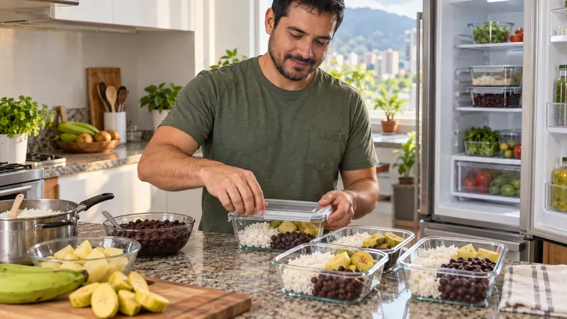

Alimentación y microbiota
Almidón resistente: qué es, alimentos y preparación

El almidón resistente es la parte del almidón que no se digiere por completo en el intestino delgado. Llega al colon, donde algunos microorganismos pueden fermentarlo. Se encuentra de forma natural en alimentos como legumbres y plátano verde, y también puede formarse parcialmente cuando ciertos alimentos cocidos, como arroz o papa, se enfrían.
Eso no lo convierte en un alimento milagroso ni significa que debas comer sobras frías. La cantidad cambia según la variedad, madurez, cocción, enfriamiento y recalentado. Además, cualquier práctica con arroz, papa o pasta cocidos debe respetar normas de seguridad alimentaria.
Por qué se llama “resistente”
El almidón habitual se descompone principalmente en glucosa durante la digestión. El resistente, por su estructura o por estar físicamente protegido dentro del alimento, escapa en parte a ese proceso. Su comportamiento se parece al de algunos tipos de fibra, aunque químicamente sigue siendo almidón.
Al llegar al colon puede ser utilizado por determinados microorganismos, que producen metabolitos como ácidos grasos de cadena corta. La respuesta no es igual para todos: depende del tipo de almidón resistente, la cantidad, la dieta completa y la microbiota individual.
Los tipos de almidón resistente, explicados de forma sencilla
- Tipo 1: queda físicamente protegido dentro de semillas, granos o legumbres poco procesados.
- Tipo 2: aparece en estructuras naturalmente resistentes, como las del plátano o cambur verde y algunos almidones crudos.
- Tipo 3: se forma cuando parte del almidón cocido se reorganiza al enfriarse; este proceso se llama retrogradación.
- Tipo 4: se obtiene mediante modificaciones industriales y puede aparecer en productos formulados.
Estas categorías no predicen por sí solas un beneficio. Los estudios muestran que diferentes estructuras producen respuestas distintas, incluso entre personas que consumen el mismo producto.
Alimentos cotidianos que pueden aportarlo
Las fuentes y cantidades no son fijas, pero algunos ejemplos útiles son:
- Caraotas, lentejas, garbanzos y arvejas: aportan almidón resistente junto con otros tipos de fibra y nutrientes.
- Plátano o cambur verde: contiene más almidón resistente antes de madurar; al madurar, parte del almidón se transforma en azúcares.
- Arroz, papa y pasta cocidos y enfriados: el enfriamiento puede aumentar una fracción de almidón retrogradado.
- Granos enteros o menos procesados: parte del almidón puede quedar protegido dentro de la estructura del alimento.
Una comida normal puede combinar varias fuentes: caraotas con arroz, ensalada de papa refrigerada correctamente o una preparación con plátano verde. No necesitas comprar un polvo ni diseñar cada plato alrededor del almidón resistente.
Qué ocurre al cocinar, enfriar y recalentar
Al cocinar un alimento rico en almidón con agua, sus gránulos absorben líquido y se vuelven más accesibles a las enzimas digestivas. Durante el enfriamiento, parte de sus cadenas puede reorganizarse y hacerse más resistente. El efecto varía según el alimento y el proceso, por lo que no existe una cifra universal para “arroz de ayer” o “papa fría”.
Recalentar no necesariamente elimina todo el almidón retrogradado, pero tampoco garantiza una cantidad concreta. La preparación debe elegirse por sabor, tolerancia y seguridad, no para perseguir un supuesto máximo.
Enfriar arroz y papa con seguridad
Dejar el arroz cocido toda la noche sobre la cocina no es una estrategia para producir almidón resistente. Los alimentos cocidos pueden permitir el crecimiento de bacterias si permanecen demasiado tiempo a temperatura ambiente.
- Divide las sobras en recipientes limpios, pequeños y poco profundos para que pierdan calor con mayor rapidez.
- Refrigera los alimentos perecederos dentro de las dos horas posteriores a la cocción; si la temperatura ambiente supera 32 °C, hazlo dentro de una hora.
- Mantén el refrigerador a 4 °C o menos.
- Consume las sobras refrigeradas dentro de tres o cuatro días o congélalas.
- Al recalentar, asegúrate de que queden calientes de manera uniforme y evita ciclos repetidos de enfriamiento y calentamiento.
FoodSafety.gov y el USDA advierten que las sobras deben refrigerarse pronto. La seguridad tiene prioridad sobre cualquier cambio nutricional producido durante el enfriamiento.
Almidón resistente y microbiota: qué dice la evidencia
Una revisión sistemática de 39 ensayos aleatorizados encontró que la suplementación fue tolerada en muchos estudios y que la producción de ácidos grasos de cadena corta aumentó en la mayoría de los ensayos que la midieron, pero no en todos. Las dosis investigadas con suplementos no deben trasladarse automáticamente a una receta doméstica.
Otros trabajos muestran variación importante entre individuos y entre tipos de almidón resistente. Esto impide afirmar que una porción específica “repare”, “limpie” o “equilibre” la microbiota. Puedes revisar el contexto general de la relación entre microbiota y alimentación.
¿Es fibra, prebiótico o probiótico?
El almidón resistente suele incluirse dentro de la fibra dietética porque evita la digestión en el intestino delgado. Sin embargo, solubilidad, fermentabilidad y viscosidad describen propiedades diferentes; no basta una sola etiqueta para predecir su efecto.
No es un probiótico porque no aporta microorganismos vivos. Algunas formas pueden estudiarse por su efecto prebiótico, pero el término requiere utilización selectiva por microorganismos y un beneficio demostrado. Nuestra guía explica por qué prebiótico y probiótico no son sinónimos.
Cómo incorporarlo sin aumentar molestias
El almidón resistente fermentable puede aumentar gases o distensión en algunas personas. Empieza con porciones habituales de alimentos, cambia una cosa a la vez y observa la tolerancia. La guía sobre cómo aumentar la fibra gradualmente ofrece un método práctico.
Consulta antes de hacer cambios grandes o usar suplementos si tienes síndrome de intestino irritable, enfermedad inflamatoria intestinal activa, estrechamientos, cirugía digestiva reciente, diabetes tratada con medicamentos u otra condición que requiera una pauta individual. Busca atención ante dolor intenso, vómitos persistentes, sangre en las heces, fiebre, pérdida de peso o distensión marcada.
Preguntas frecuentes
¿Qué es el almidón resistente?
Es una fracción del almidón que resiste la digestión en el intestino delgado y llega al colon, donde puede ser fermentada.
¿Qué alimentos contienen almidón resistente?
Legumbres, plátano o cambur verde y algunos alimentos ricos en almidón después de cocinarse y enfriarse, como arroz y papa, pueden aportarlo en cantidades variables.
¿Hay que comer el arroz frío?
No. Parte del almidón reorganizado puede mantenerse después de recalentar. Lo importante es enfriar, refrigerar y recalentar con seguridad.
¿El almidón resistente es un probiótico?
No. No contiene microorganismos vivos. Es un componente alimentario que puede ser fermentado por parte de la microbiota.
Fuentes consultadas
- Sobh y colaboradores: revisión sistemática sobre tolerabilidad y ácidos grasos de cadena corta.
- Birt y colaboradores: almidón resistente, microbioma y salud.
- Stintzi y colaboradores: almidón resistente y respuestas individualizadas de la microbiota.
- FoodSafety.gov: cuatro pasos para la seguridad alimentaria.
- USDA FSIS: sobras y seguridad alimentaria.
La preparación importa, y la seguridad también
Usa alimentos cotidianos, enfría las sobras con rapidez y evita convertir una propiedad nutricional en una promesa.
Explorar la guía